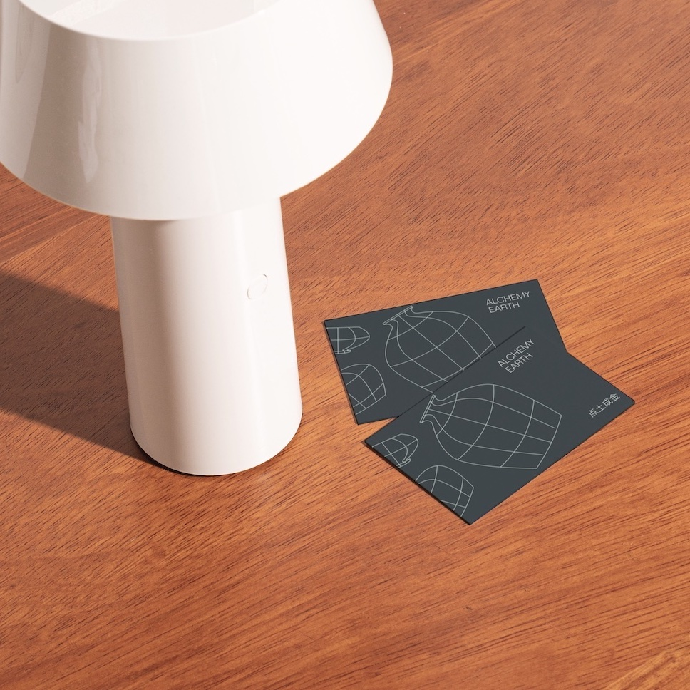
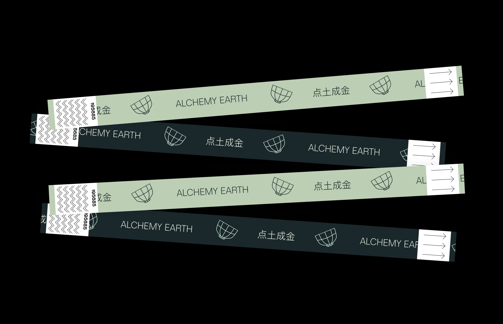
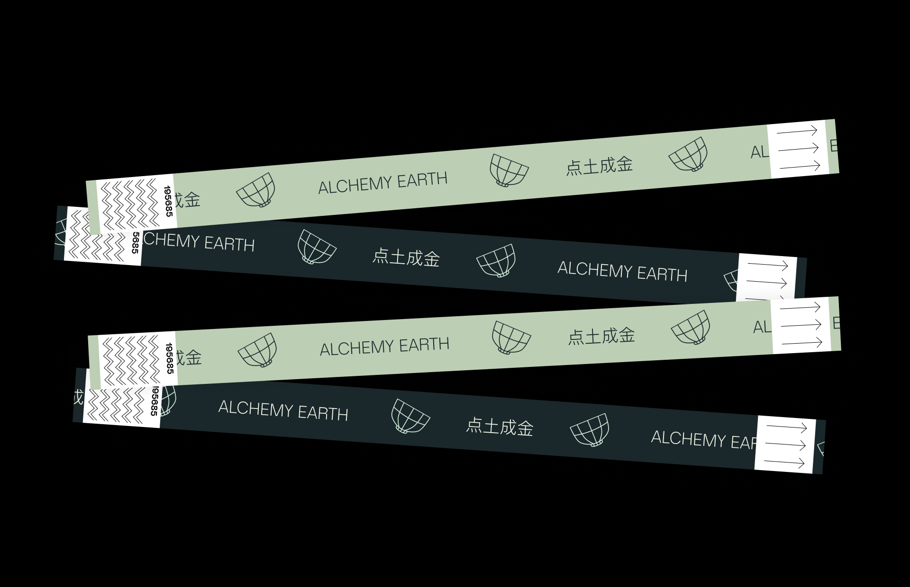

-
Design Lecture Series
Identity design -
A modern, elegant identity for a ceramic arts biennial held in the birthplace of porcelain.
-


-

-

-
The Jingdezhen International Ceramic Arts Biennial is a celebration of the past, present, and future of the ceramic arts, held at the birthplace of porcelain some 3000 years ago. To this day, Jingdezhen remains a culture hub for ceramicists across the globe. The third edition of this biennial celebrates the beauty of an ageless craft, of transforming elements into art, through what audiences across continents and time can only describe as alchemy.
The Alchemy Earth exhibition identity is a response to the modernization of the ceramic arts. Elegant, simple, and bold, it provides a backbone for the breadth of experimental work exhibited throughout the biennial, without compromising on the roots of the craft. -
Time
Role -
5 weeks
Sole designer
Instructed by Kelsey Elder - 
-

-

-

 
